7: Customizing tables, adding and reordering factors, and more ggplot
BSTA 526: R Programming for Health Data Science
OHSU-PSU School of Public Health
2026-02-19
1 Welcome to R Programming: Part 7!
Today we will learn more about customizing tables, adding and reordering factors, and ggplot.
Before you get started:
Remember to save this notebook under a new name, such as
part_07_b526_YOURNAME.qmd.
- Load the packages in the setup code chunk
1.1 Learning Objectives
- Learn new options for customizing tables
- Practice modifying factor levels
- Practice ggplot and Learn more geometries
2 Data: mouse data form Part 6
2.1 Load Part 6 saved workspace Rdata file
- At the end of Part 6, we saved all objects in our workspace (environment) using the
save.image()function. - Below we load this Rdata file so that all of the objects (such as datasets) that were in our workspace are available to use, and we can start Part 7 where we left off at the end of Part 6.
2.2 Mouse data reminder
- Today we are going to be working with a subset of real data that Dr. Minnier has analyzed.
- The actual dataset had hundreds of columns (dozens of outcome variables, a few biomarker values, hundreds of miRNA expression data, and lipidomics on a number of lipids).
- The data we are using are a subset of the actual data with some random noise added to the values to protect the data privacy of the lab.
- Mouse data variables:
- treatment (yes, no)
- sex (male, female)
- strain (genetic strain of mouse: Balb/C, C3H)
- time point (1 month, 6 month, 12 month = age of mice)
- two miRNA expression values (micro ribonucleic acid, or microRNA)
- biomarker values from three different brain tissues
- outcomes of interest
- learning outcome (higher values are better)
- preference for object 1 and object 2 (from behavioral and cognitive tests on mice) which is measured in % time spent with that object.
- The format of the Excel sheet is pretty similar to what was originally given, other than removing some columns.
- One big change is that in the original data, each time point was a different cohort of mice, but we are pretending that it is the same cohort of mice and we have longitudinal data (actually impossible due to the way the biomarkers are measured, but let’s just ignore that). This will allow you to practice more complex joins.
3 Customizing tables
3.1 Basic gt() examples
- The
gtpackage can make our tables look much nicer in html output.
- Table output without
gt()
# Just a regular summarize tibble result
mouse_biomarker_long %>%
group_by(biomarker_type) %>%
summarize(
mean_biomarker = mean(biomarker_value, na.rm = TRUE)) # A tibble: 3 × 2
biomarker_type mean_biomarker
<chr> <dbl>
1 bdnf 931.
2 cd68 1813.
3 map2 1974.- Using default
gt()settings for making tables output nicer
- Table output without
gt()
# regular tibble output
mouse_biomarker_long %>%
group_by(
time_month, biomarker_location, biomarker_type) %>%
summarize(
mean_biomarker = mean(biomarker_value, na.rm = TRUE))# A tibble: 21 × 4
# Groups: time_month, biomarker_location [9]
time_month biomarker_location biomarker_type mean_biomarker
<fct> <chr> <chr> <dbl>
1 1 month amygdala bdnf 551.
2 1 month amygdala cd68 727.
3 1 month cortex bdnf 931.
4 1 month cortex cd68 16.4
5 1 month cortex map2 911.
6 1 month hypothalamus bdnf 1054.
7 1 month hypothalamus cd68 4108.
8 6 months amygdala bdnf 606.
9 6 months amygdala cd68 567.
10 6 months cortex bdnf NaN
# ℹ 11 more rows- If we have multiple grouping variables, by default
gt()will make grouped headers
mouse_biomarker_long %>%
group_by(
time_month, biomarker_location, biomarker_type) %>%
summarize(
mean_biomarker = mean(biomarker_value, na.rm = TRUE)) %>%
gt()| biomarker_type | mean_biomarker |
|---|---|
| 1 month - amygdala | |
| bdnf | 550.51759 |
| cd68 | 726.86587 |
| 1 month - cortex | |
| bdnf | 931.15205 |
| cd68 | 16.44287 |
| map2 | 910.52064 |
| 1 month - hypothalamus | |
| bdnf | 1053.55443 |
| cd68 | 4108.29798 |
| 6 months - amygdala | |
| bdnf | 605.93553 |
| cd68 | 566.97346 |
| 6 months - cortex | |
| bdnf | NaN |
| cd68 | NaN |
| map2 | NaN |
| 6 months - hypothalamus | |
| bdnf | 1169.20077 |
| cd68 | 5599.08499 |
| 12 months - amygdala | |
| bdnf | NaN |
| cd68 | NaN |
| 12 months - cortex | |
| bdnf | 1230.01028 |
| cd68 | 18.56510 |
| map2 | 3037.53201 |
| 12 months - hypothalamus | |
| bdnf | NaN |
| cd68 | NaN |
3.2 adorn tabyls
- There are various
adorn_*functions within thejanitorpackage that can add lots of summary stats to your crosstabyls. - See lots of examples in the vignette
- Here we’re using the Palmer penguins data since it has more interesting categorical data values
- How were the percentages calculated?
- What values are being shown? (hint: they’re not percentages)
# simple cross table with percents (denominator is row by default)
penguins %>%
tabyl(species, sex) %>%
adorn_percentages() species female male NA_
Adelie 0.4802632 0.4802632 0.03947368
Chinstrap 0.5000000 0.5000000 0.00000000
Gentoo 0.4677419 0.4919355 0.04032258- Calculate column percentages
# ?adorn_percentages
penguins %>%
tabyl(species, sex) %>%
# instead of counts, show percentages, the default denominator is row
adorn_percentages(denominator = "col") species female male NA_
Adelie 0.4424242 0.4345238 0.5454545
Chinstrap 0.2060606 0.2023810 0.0000000
Gentoo 0.3515152 0.3630952 0.4545455- Calculate overall percentages
- Include a row and/or column with row and/or column totals
- Ideally only include totals that make sense…
penguins %>%
tabyl(species, sex) %>%
adorn_percentages(denominator = "col") %>%
# add row and column totals, the default is to show just column totals in "row"
# this makes for a strange row total, though, as we get 300% total
adorn_totals(where = c("row", "col")) species female male NA_ Total
Adelie 0.4424242 0.4345238 0.5454545 1.4224026
Chinstrap 0.2060606 0.2023810 0.0000000 0.4084416
Gentoo 0.3515152 0.3630952 0.4545455 1.1691558
Total 1.0000000 1.0000000 1.0000000 3.0000000- Including both row & column totals makes more sense with “overall” percentages
penguins %>%
tabyl(species, sex) %>%
# percent of total (denominator is the total sum)
adorn_percentages(denominator = "all") %>%
# now it makes more sense to have totals in both row and column
adorn_totals(where = c("row", "col")) species female male NA_ Total
Adelie 0.21220930 0.21220930 0.01744186 0.4418605
Chinstrap 0.09883721 0.09883721 0.00000000 0.1976744
Gentoo 0.16860465 0.17732558 0.01453488 0.3604651
Total 0.47965116 0.48837209 0.03197674 1.0000000- Convert the proportions into actual percents:
penguins %>%
tabyl(species, sex) %>%
# percent of total (denominator is the total sum)
adorn_percentages(denominator = "all") %>%
# now it makes more sense to have totals in both row and column
adorn_totals(where = c("row", "col")) %>%
adorn_pct_formatting() species female male NA_ Total
Adelie 21.2% 21.2% 1.7% 44.2%
Chinstrap 9.9% 9.9% 0.0% 19.8%
Gentoo 16.9% 17.7% 1.5% 36.0%
Total 48.0% 48.8% 3.2% 100.0%- Include the counts:
penguins %>%
tabyl(species, sex) %>%
# percent of total (denominator is the total sum)
adorn_percentages(denominator = "all") %>%
adorn_totals(where = c("row", "col")) %>%
adorn_pct_formatting() %>%
# add back in counts in ()
# need to have adorn_ns AFTER adding pct formatting, otherwise error
adorn_ns() species female male NA_ Total
Adelie 21.2% (73) 21.2% (73) 1.7% (6) 44.2% (152)
Chinstrap 9.9% (34) 9.9% (34) 0.0% (0) 19.8% (68)
Gentoo 16.9% (58) 17.7% (61) 1.5% (5) 36.0% (124)
Total 48.0% (165) 48.8% (168) 3.2% (11) 100.0% (344)- Switch the order of n and
%:
penguins %>%
tabyl(species, sex) %>%
# percent of total (denominator is the total sum)
adorn_percentages(denominator = "all") %>%
adorn_totals(where = c("row", "col")) %>%
adorn_pct_formatting() %>%
# add position = "front" within adorn_ns
adorn_ns(position = "front") # default is position = "rear" species female male NA_ Total
Adelie 73 (21.2%) 73 (21.2%) 6 (1.7%) 152 (44.2%)
Chinstrap 34 (9.9%) 34 (9.9%) 0 (0.0%) 68 (19.8%)
Gentoo 58 (16.9%) 61 (17.7%) 5 (1.5%) 124 (36.0%)
Total 165 (48.0%) 168 (48.8%) 11 (3.2%) 344 (100.0%)Add in the names of the second variable (column variable)
penguins %>%
tabyl(species, sex) %>%
adorn_percentages(denominator = "all") %>%
adorn_totals(where = c("row", "col")) %>%
adorn_pct_formatting() %>%
adorn_ns(position = "front") %>%
# add title, need placement = "combined" for gt to work
adorn_title() sex
species female male NA_ Total
Adelie 73 (21.2%) 73 (21.2%) 6 (1.7%) 152 (44.2%)
Chinstrap 34 (9.9%) 34 (9.9%) 0 (0.0%) 68 (19.8%)
Gentoo 58 (16.9%) 61 (17.7%) 5 (1.5%) 124 (36.0%)
Total 165 (48.0%) 168 (48.8%) 11 (3.2%) 344 (100.0%)- What does
adorn_title(placement = "combined")do?
penguins %>%
tabyl(species, sex) %>%
adorn_percentages(denominator = "all") %>%
adorn_totals(where = c("row", "col")) %>%
adorn_pct_formatting() %>%
adorn_ns(position = "front") %>%
# add title, need placement = "combined" for gt to work
adorn_title(placement = "combined") species/sex female male NA_ Total
Adelie 73 (21.2%) 73 (21.2%) 6 (1.7%) 152 (44.2%)
Chinstrap 34 (9.9%) 34 (9.9%) 0 (0.0%) 68 (19.8%)
Gentoo 58 (16.9%) 61 (17.7%) 5 (1.5%) 124 (36.0%)
Total 165 (48.0%) 168 (48.8%) 11 (3.2%) 344 (100.0%)3.3 Add gt() options to tabyl()
- Default
gt() - Important!!!
adorn_title()does not work together withgt()unless the optionplacement = "combined"is included
penguins %>%
tabyl(species, sex) %>%
adorn_percentages(denominator = "all") %>%
adorn_totals(where = c("row", "col")) %>%
adorn_pct_formatting() %>%
adorn_ns(position = "front") %>%
# add title, need placement = "combined" for gt to work
adorn_title(placement = "combined") %>%
# make it fancy html
gt()| species/sex | female | male | NA_ | Total |
|---|---|---|---|---|
| Adelie | 73 (21.2%) | 73 (21.2%) | 6 (1.7%) | 152 (44.2%) |
| Chinstrap | 34 (9.9%) | 34 (9.9%) | 0 (0.0%) | 68 (19.8%) |
| Gentoo | 58 (16.9%) | 61 (17.7%) | 5 (1.5%) | 124 (36.0%) |
| Total | 165 (48.0%) | 168 (48.8%) | 11 (3.2%) | 344 (100.0%) |
- We can use
gtpackage functions to make the table even nicer tab_spanner()is also a prettier and clearer way to add in the name for the column headers instead of usingadorn_title()
penguins %>%
tabyl(species, sex) %>%
adorn_percentages(denominator = "all") %>%
adorn_totals(where = c("row", "col")) %>%
adorn_pct_formatting() %>%
adorn_ns(position = "front") %>%
# specify that species denotes the name of the rows (removes the column label)
# add line between row names and rest of table
gt(
rowname_col = "species") %>%
# add Species back in as row header
tab_stubhead(
label = "Species") %>%
# add sex label across multiple columns
tab_spanner(
label = "Sex",
columns = c(female, male, `NA_`)
) %>%
# add title
tab_header(
title = "Species by sex percentages (counts)",
subtitle = "Palmer penguin data"
)| Species by sex percentages (counts) | ||||
| Palmer penguin data | ||||
| Species |
Sex
|
Total | ||
|---|---|---|---|---|
| female | male | NA_ | ||
| Adelie | 73 (21.2%) | 73 (21.2%) | 6 (1.7%) | 152 (44.2%) |
| Chinstrap | 34 (9.9%) | 34 (9.9%) | 0 (0.0%) | 68 (19.8%) |
| Gentoo | 58 (16.9%) | 61 (17.7%) | 5 (1.5%) | 124 (36.0%) |
| Total | 165 (48.0%) | 168 (48.8%) | 11 (3.2%) | 344 (100.0%) |
See the very useful vignettes about the gt package, for more.
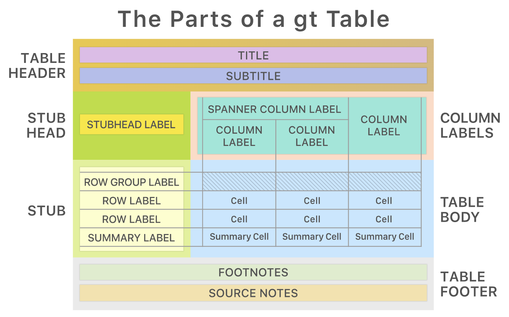
3.4 gtsummary::tbl_summary()
The gtsummary package is built on gt:
| Characteristic | 1 month N = 321 |
6 months N = 321 |
12 months N = 321 |
|---|---|---|---|
| strain | |||
| Balb/C | 16 (50%) | 16 (50%) | 16 (50%) |
| C3H | 16 (50%) | 16 (50%) | 16 (50%) |
| trt | |||
| - | 16 (50%) | 16 (50%) | 16 (50%) |
| + | 16 (50%) | 16 (50%) | 16 (50%) |
| sex | |||
| F | 16 (50%) | 16 (50%) | 16 (50%) |
| M | 16 (50%) | 16 (50%) | 16 (50%) |
| normalized_bdnf_amygdala_pg_mg | 506 (414, 656) | 584 (459, 739) | NA (NA, NA) |
| Unknown | 1 | 5 | 32 |
| normalized_bdnf_cortex_pg_mg | 901 (854, 1,035) | NA (NA, NA) | 1,140 (912, 1,387) |
| Unknown | 0 | 32 | 0 |
| normalized_bdnf_hypothalamus_pg_mg | 1,063 (867, 1,191) | 1,152 (1,053, 1,195) | NA (NA, NA) |
| Unknown | 4 | 0 | 32 |
| normalized_cd68_amygdala_pg_mg | 693 (558, 815) | 540 (462, 630) | NA (NA, NA) |
| Unknown | 1 | 1 | 32 |
| normalized_cd68_cortex_pg_mg | 14 (12, 18) | NA (NA, NA) | 15 (10, 21) |
| Unknown | 0 | 32 | 1 |
| normalized_cd68_hypothalamus_pg_mg | 3,873 (3,223, 4,888) | 5,148 (4,353, 6,654) | NA (NA, NA) |
| Unknown | 4 | 0 | 32 |
| normalized_map2_cortex_pg_mg | 883 (639, 1,110) | NA (NA, NA) | 2,438 (1,190, 3,370) |
| Unknown | 0 | 32 | 0 |
| mirna1 | 5.92 (5.38, 6.62) | 0.07 (-0.57, 0.88) | 0.19 (-0.26, 0.93) |
| Unknown | 2 | 2 | 2 |
| mirna2 | 0.49 (-0.28, 1.24) | 0.12 (-0.21, 0.70) | 0.50 (-0.25, 1.20) |
| Unknown | 2 | 2 | 2 |
| learning_outcome | 14 (3, 24) | 13 (3, 25) | 8 (2, 28) |
| Unknown | 0 | 8 | 0 |
| preference_obj1 | 64 (35, 85) | 49 (34, 67) | 51 (38, 67) |
| Unknown | 2 | 5 | 1 |
| preference_obj2 | 36 (15, 65) | 51 (33, 66) | 49 (33, 62) |
| Unknown | 2 | 5 | 1 |
| 1 n (%); Median (Q1, Q3) | |||
4 More about factors
4.1 Adding an empty factor level, and how this affects figures and summary tables
- Create 3 new variables based off of
time_monthvariable- The original factor variable
- A character variable
- A factor variable with the “empty” level “0 months”
- Note that we’re saving this as a different dataset,
mouse_fac
mouse_fac <- mouse_biomarker_long %>%
mutate(
time_month_factor = time_month,
time_month_char = as.character(time_month_factor),
time_month_factor4 =
factor(
time_month_char,
levels = c("0 months", "1 month", "6 months", "12 months")
)
)
glimpse(mouse_fac)Rows: 672
Columns: 18
$ sid <dbl> 137, 137, 137, 137, 137, 137, 137, 137, 137, 137, …
$ strain <chr> "C3H", "C3H", "C3H", "C3H", "C3H", "C3H", "C3H", "…
$ trt <chr> "-", "-", "-", "-", "-", "-", "-", "-", "-", "-", …
$ sex <chr> "M", "M", "M", "M", "M", "M", "M", "M", "M", "M", …
$ time <chr> "tp1", "tp1", "tp1", "tp1", "tp1", "tp1", "tp1", "…
$ mirna1 <dbl> 5.2630200, 5.2630200, 5.2630200, 5.2630200, 5.2630…
$ mirna2 <dbl> 1.6536200, 1.6536200, 1.6536200, 1.6536200, 1.6536…
$ learning_outcome <dbl> 3.52, 3.52, 3.52, 3.52, 3.52, 3.52, 3.52, 19.81, 1…
$ preference_obj1 <dbl> 41.72205, 41.72205, 41.72205, 41.72205, 41.72205, …
$ preference_obj2 <dbl> 58.27795, 58.27795, 58.27795, 58.27795, 58.27795, …
$ time_month <fct> 1 month, 1 month, 1 month, 1 month, 1 month, 1 mon…
$ biomarker_type <chr> "bdnf", "bdnf", "bdnf", "cd68", "cd68", "cd68", "m…
$ biomarker_location <chr> "amygdala", "cortex", "hypothalamus", "amygdala", …
$ biomarker_type_temp <chr> "bdnf_amygdala", "bdnf_cortex", "bdnf_hypothalamus…
$ biomarker_value <dbl> 492.483106, 720.017330, NA, 988.962849, 8.393707, …
$ time_month_factor <fct> 1 month, 1 month, 1 month, 1 month, 1 month, 1 mon…
$ time_month_char <chr> "1 month", "1 month", "1 month", "1 month", "1 mon…
$ time_month_factor4 <fct> 1 month, 1 month, 1 month, 1 month, 1 month, 1 mon…- Let’s look at tables of these new variables:
time_month_char n percent
1 month 224 0.3333333
12 months 224 0.3333333
6 months 224 0.3333333 time_month_factor n percent
1 month 224 0.3333333
6 months 224 0.3333333
12 months 224 0.3333333 time_month_factor4 n percent
0 months 0 0.0000000
1 month 224 0.3333333
6 months 224 0.3333333
12 months 224 0.3333333 time_month_factor4 - +
0 months 0 0
1 month 112 112
6 months 112 112
12 months 112 1124.2 Using group_by() and summarize() with empty factor levels
- Summarize mean
mirnavalues grouped by timetime_month_factor4
- Note that the empty factor level doesn’t show up in the output
- Use .drop = FALSE in the
group_by()function to show the empty factor level
mouse_fac %>%
# add .drop = FALSE to keep factor levels that don't appear in data
group_by(time_month_factor4,
.drop = FALSE) %>%
summarize(across(mirna1:mirna2,
~ mean(.x, na.rm = TRUE)))# A tibble: 4 × 3
time_month_factor4 mirna1 mirna2
<fct> <dbl> <dbl>
1 0 months NaN NaN
2 1 month 5.98 0.451
3 6 months 0.133 0.241
4 12 months 0.306 0.499- Group by both time month and treatment:
mouse_fac %>%
# add .drop = FALSE to keep factor levels that don't appear in data
group_by(time_month_factor4, trt,
.drop = FALSE) %>%
summarize(across(mirna1:mirna2,
~ mean(.x, na.rm = TRUE)))# A tibble: 7 × 4
# Groups: time_month_factor4 [4]
time_month_factor4 trt mirna1 mirna2
<fct> <chr> <dbl> <dbl>
1 0 months <NA> NaN NaN
2 1 month + 6.06 0.513
3 1 month - 5.89 0.389
4 6 months + 0.402 0.128
5 6 months - -0.102 0.341
6 12 months + 0.298 0.409
7 12 months - 0.313 0.578To show both levels of trt, make it a factor first:
mouse_fac %>%
mutate(trt = factor(trt)) %>%
group_by(time_month_factor4, trt,
.drop = FALSE) %>%
summarize(across(mirna1:mirna2,
~ mean(.x, na.rm = TRUE)))# A tibble: 8 × 4
# Groups: time_month_factor4 [4]
time_month_factor4 trt mirna1 mirna2
<fct> <fct> <dbl> <dbl>
1 0 months - NaN NaN
2 0 months + NaN NaN
3 1 month - 5.89 0.389
4 1 month + 6.06 0.513
5 6 months - -0.102 0.341
6 6 months + 0.402 0.128
7 12 months - 0.313 0.578
8 12 months + 0.298 0.4094.3 ggplot boxplot example
- This doesn’t show the empty time category “0 months”.
- We can fix this with
scale_x_discrete():
- If we want to use the factor as a facet (without adding that extra row of empty data), we can also show an empty level with
drop = FALSEinsidefacet_grid():
# could even add the factor level as a facet
# do not need to add extra row, since we use drop=FALSE
ggplot(mouse_fac,
aes(x = biomarker_location,
y = biomarker_value,
fill = trt)) +
geom_boxplot() +
facet_grid(cols = vars(time_month_factor4),
rows = vars(biomarker_type),
scales="free_y",
# WE NEED TO ADD THIS BECAUSE NO DATA
drop = FALSE) +
theme_bw() +
labs(x = "Biomarker Tissue",
y = "Biomarker Value (pg/mg)",
fill = "Treatment") +
ggthemes::scale_fill_tableau()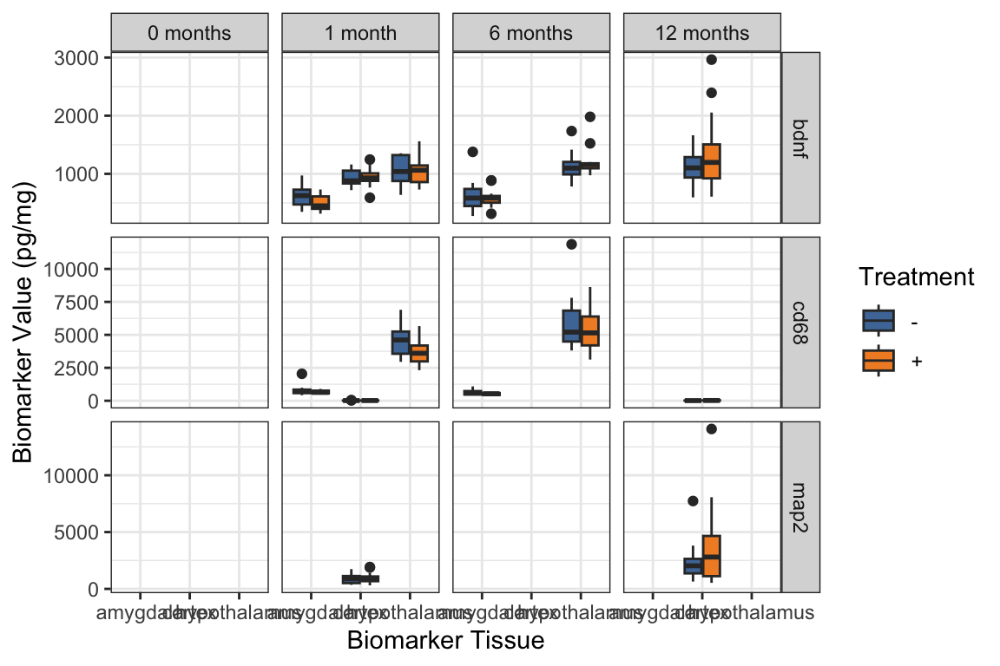
4.4 fct_rev() - reversing the order of a factor
- Very useful when using factors on the y-axis, because the default ordering is first value at the bottom, rather than first value at the top.
# library(forcats)
mouse_fac <- mouse_fac %>%
mutate(
time_month_factor_rev = fct_rev(time_month_factor))
# check: compare original & reversed factor vars
mouse_fac %>% tabyl(time_month_factor, time_month_factor_rev) %>%
adorn_title() time_month_factor_rev
time_month_factor 12 months 6 months 1 month
1 month 0 0 224
6 months 0 224 0
12 months 224 0 04.5 fct_reorder()
fct_reorder()lets you reorder factors by anothernumericvariable.- Below we reorder the levels of
time_month_factorby the median values ofmirna2at the 3 time points.
- Reorder the levels of
time_month_factorby the median values ofmirna2at the 3 time points.
mouse_fac <- mouse_fac %>%
mutate(time_month_factor_reorder =
fct_reorder(time_month_factor, mirna2,
.fun = median, na.rm = TRUE))
# check
mouse_fac %>%
tabyl(time_month_factor_reorder, time_month_factor) time_month_factor_reorder 1 month 6 months 12 months
6 months 0 224 0
1 month 224 0 0
12 months 0 0 2244.6 Other useful forcats functions
fct_recode()- lets you recode values manually.fct_other()- lets you define what categories are grouped/lumped together into anothervariable (see example in Part 5)- For more examples using
fct_other()see Winter 2023 Muddiest Points on Class 5 at the bottom of the page
- For more examples using
5 Additional ggplot practice
5.1 geom_jitter() & “dodged” boxplots
With small datasets, it is often more informative to show the actual data values, rather than a summary like a boxplot.
We use
geom_jitterto show the data values with random horizontal (or vertical, or both) “jitter” (noise) so they don’t all pile on top of each other.When we have “dodged” boxplots, that is, boxplots side by side based on a fill or color, we need to take special care with the position argument.
Always read the reference/help on these functions for more examples; geom_jitter.
What is wrong with the jittering?
ggplot(mouse_biomarker_long,
aes(x = biomarker_location,
y = biomarker_value,
fill = trt)) +
geom_boxplot(
alpha = 0.5,
outlier.color = NA) +
geom_jitter(pch = 21) + # jitter layer
facet_grid(
cols = vars(time_month),
rows = vars(biomarker_type),
scales = "free_y"
) +
theme_bw() +
labs(
x = "Biomarker Tissue",
y = "Biomarker Value (pg/mg)",
fill = "Treatment") +
ggthemes::scale_fill_tableau()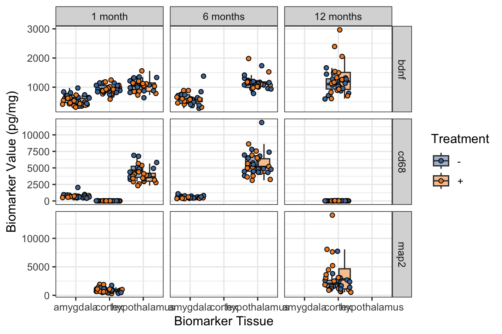
pchis short for plotting character.- What happens if you remove the
pch = 21within thegeom_jitter? - Learn more about different pch symbol options.
- What happens if you remove the
- Adding
position = position_jitterdodge()is a fix for the jittering problem:
ggplot(mouse_biomarker_long,
aes(x = biomarker_location,
y = biomarker_value,
fill = trt)) +
geom_boxplot(
alpha = 0.5,
outlier.color = NA) +
# note we need position
# when we have "dodged" boxplots
geom_jitter(
pch = 21,
position = position_jitterdodge()
) +
# This can also be achieved with geom_point:
# geom_point(pch = 21, position = position_jitterdodge()) +
facet_grid(
cols = vars(time_month),
rows = vars(biomarker_type),
scales = "free_y"
) +
theme_bw() +
labs(
x = "Biomarker Tissue",
y = "Biomarker Value (pg/mg)",
fill = "Treatment") +
ggthemes::scale_fill_tableau()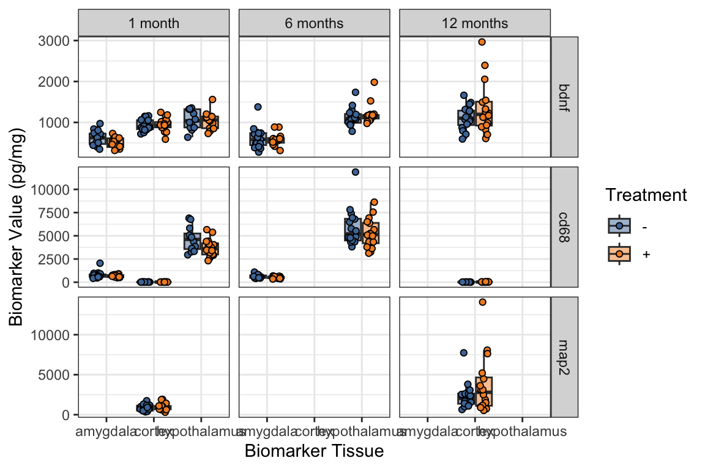
5.2 geom_histogram() with fill
- Below we make histograms of the biomarker values,
- again faceted by the tissue and type.
- We can fill by treatment.
- The default behavior is to stack the histograms for treatment on top of each other,
- so if we want to show overlaid histograms we need to use
position = "identity"argument,- and be sure to choose alpha less than 1 or else you won’t be able to see the two histogram layers.
Note that in facet_grid() the variables are being listed in a different way than what I have showed you previously, which is the same as:
facet_grid(rows = vars(biomarker_type), cols = vars(biomarker_location))
- Histograms with
fill = trt - How to interpret the “filled” histograms?
ggplot(
# Just show the first time point
mouse_biomarker_long %>%
filter(time == "tp1"),
aes(x = biomarker_value,
fill = trt)) +
geom_histogram() +
facet_grid(
# the formula way to use facet_grid,
biomarker_type ~ biomarker_location,
scales = "free_y") +
theme_bw() +
labs(
x = "Biomarker value (pg/mg)",
title = "Biomarker distribution (Time Point 1)",
subtitle = "Stratified by biomarker type and tissue type",
fill = "Treatment"
) +
ggthemes::scale_fill_tableau()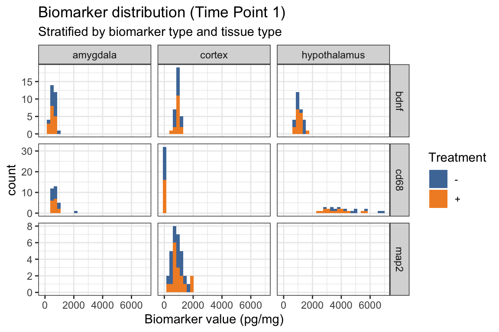
- Below we add
position = "identity"withingeom_histogram() - How does this change the “filled” histograms?
ggplot(
# Just show the first time point
mouse_biomarker_long %>%
filter(time == "tp1"),
aes(x = biomarker_value,
fill = trt)) +
geom_histogram(
position = "identity"
) +
facet_grid(
# the formula way to use facet_grid,
biomarker_type ~ biomarker_location,
scales = "free_y") +
theme_bw() +
labs(
x = "Biomarker value (pg/mg)",
title = "Biomarker distribution (Time Point 1)",
subtitle = "Stratified by biomarker type and tissue type",
fill = "Treatment"
) +
ggthemes::scale_fill_tableau()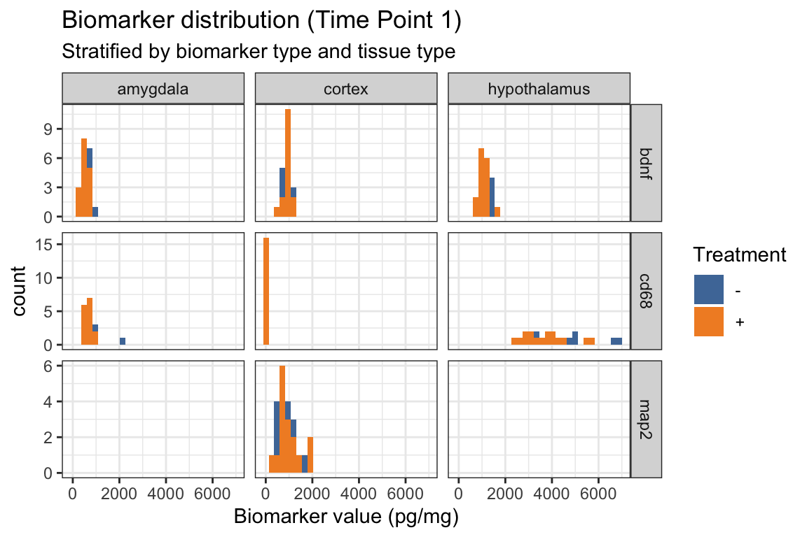
- Below we add
alpha = .4in addition toposition = "identity"withingeom_histogram() - How does this change the “filled” histograms?
ggplot(
# Just show the first time point
mouse_biomarker_long %>%
filter(time == "tp1"),
aes(x = biomarker_value,
fill = trt)) +
geom_histogram(
alpha = .4,
position = "identity"
) +
facet_grid(
# the formula way to use facet_grid,
biomarker_type ~ biomarker_location,
scales = "free_y") +
theme_bw() +
labs(
x = "Biomarker value (pg/mg)",
title = "Biomarker distribution (Time Point 1)",
subtitle = "Stratified by biomarker type and tissue type",
fill = "Treatment"
) +
ggthemes::scale_fill_tableau()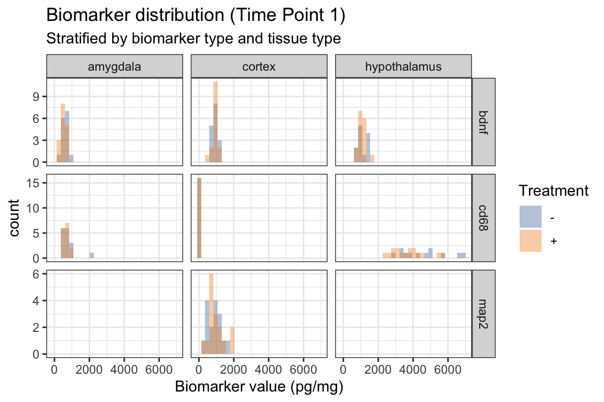
5.3 Scatterplot with different shapes
- New!
shapewithinaes()
ggplot(mouse_biomarker_long %>%
filter(time=="tp1"),
aes(x = biomarker_value,
y = learning_outcome,
color = trt,
shape = strain)) +
geom_point() +
facet_grid(
biomarker_type ~ biomarker_location,
scales = "free_x") +
theme_bw() +
labs(
x = "Biomarker value (pg/mg)",
y = "Learning Outcome",
title = "Learning outcome vs biomarkers (Time Point 1)",
subtitle = "Stratified by biomarker type and tissue type",
color = "Treatment",
shape = "Strain") +
ggthemes::scale_color_tableau()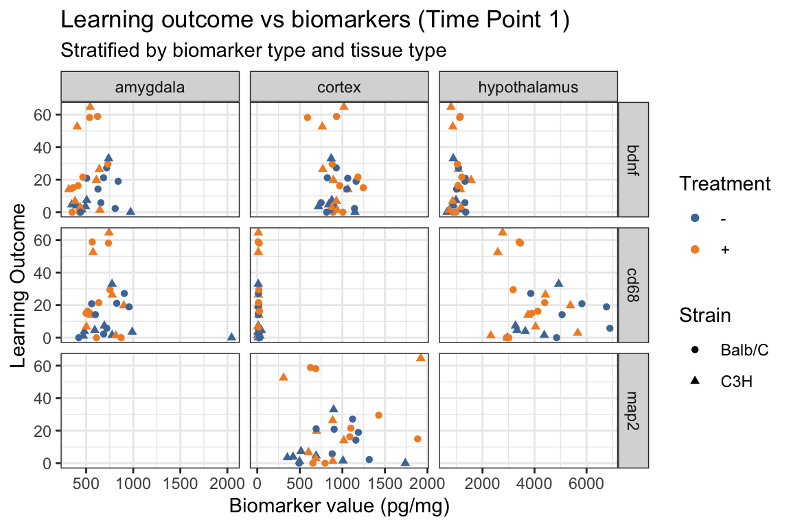
5.4 Challenge 1 (on your own 5 minutes)
What’s going on with tp1?
There seems to be a batch effect in mirna1, can you manipulate this plot to figure out what’s going on?
5.5 geom_line(): scatterplot trajectories
Familiarize yourself with the figure. What does it show?
Also, note how a
facet_wrapwith two variables figure looks different from usingfacet_grid.
ggplot(mouse_data %>%
arrange(sid,time),
aes(x = mirna2,
y = learning_outcome,
color = trt,
shape= time_month)
) +
geom_point() +
facet_wrap(vars(strain, sex)) +
theme_bw() +
labs(
x = "miRNA2 expression",
y = "Learning Outcome",
title = "miRNA vs outcome across time points",
subtitle = "Stratified by 2strain and sex (M/F)") +
ggthemes::scale_color_tableau()
- Add trajectories with
geom_line(). - What trajectories are being shown???
ggplot(mouse_data %>%
arrange(sid,time),
aes(x = mirna2,
y = learning_outcome,
color = trt,
shape= time_month)
) +
geom_point() +
geom_line() +
facet_wrap(vars(strain, sex)) +
theme_bw() +
labs(
x = "miRNA2 expression",
y = "Learning Outcome",
title = "miRNA vs outcome across time points",
subtitle = "Stratified by 2strain and sex (M/F)") +
ggthemes::scale_color_tableau()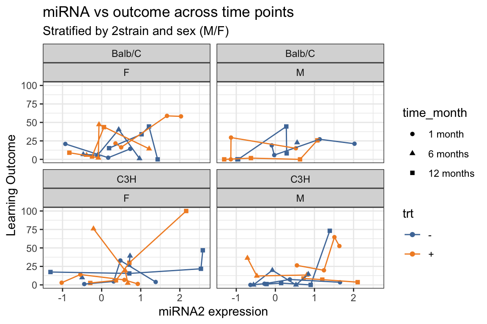
- Add
group = sidwithin theaes(). - How does this change the trajectories?
ggplot(mouse_data %>%
arrange(sid,time),
aes(x = mirna2,
y = learning_outcome,
color = trt,
shape= time_month,
group = sid
)) +
geom_point() +
geom_line() +
facet_wrap(vars(strain, sex)) +
theme_bw() +
labs(
x = "miRNA2 expression",
y = "Learning Outcome",
title = "Trajectory of miRNA vs outcome across time points",
subtitle = "Stratified by 2strain and sex (M/F)") +
ggthemes::scale_color_tableau()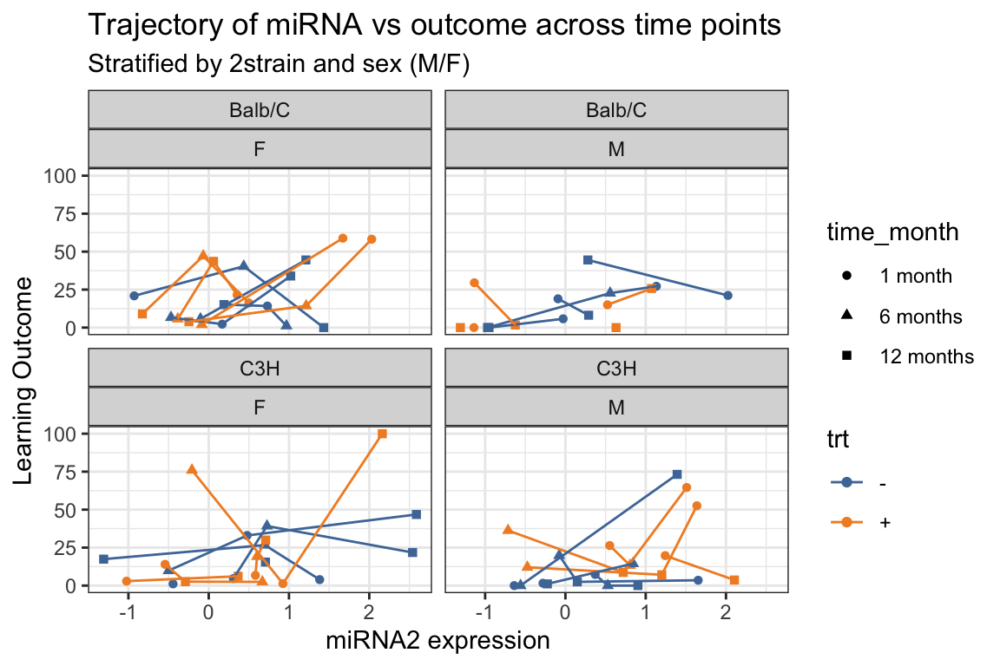
5.6 geom_tile() - with summarized data
geom_tile()is similar to a heatmap, in that the colors of the “tiles” represent numeric values.
Here we use a somewhat complex example.
- Suppose we want to show the difference in mean biomarker between treated and untreated (
trt+minus-) mice,- stratified by biomarker_type, biomarker_location, strain, and sex.
- We first need to create a dataframe that contains the means
- for every combination of the treatment group and stratification variables
- Then we need to take the differences of the two treatment means.
- Calculate mean of biomarker value for each combination of groupings
tmpdata_mean = mouse_biomarker_long %>%
group_by(biomarker_type,
biomarker_location,
trt,
strain,
sex) %>%
summarize(m = mean(biomarker_value, na.rm = TRUE))
tmpdata_mean# A tibble: 56 × 6
# Groups: biomarker_type, biomarker_location, trt, strain [28]
biomarker_type biomarker_location trt strain sex m
<chr> <chr> <chr> <chr> <chr> <dbl>
1 bdnf amygdala + Balb/C F 588.
2 bdnf amygdala + Balb/C M 559.
3 bdnf amygdala + C3H F 490.
4 bdnf amygdala + C3H M 484.
5 bdnf amygdala - Balb/C F 719.
6 bdnf amygdala - Balb/C M 711.
7 bdnf amygdala - C3H F 499.
8 bdnf amygdala - C3H M 507.
9 bdnf cortex + Balb/C F 1080.
10 bdnf cortex + Balb/C M 1582.
# ℹ 46 more rowspivot_wider()so that we have a+column and a-column that contains those means- Then add a column with the differences
tmpdata_mean_wide = pivot_wider(tmpdata_mean,
id_cols = c(biomarker_type,
biomarker_location,
strain,
sex),
names_from = trt,
values_from = m
) %>%
mutate(diff = `+` - `-`)
tmpdata_mean_wide# A tibble: 28 × 7
# Groups: biomarker_type, biomarker_location, strain [14]
biomarker_type biomarker_location strain sex `+` `-` diff
<chr> <chr> <chr> <chr> <dbl> <dbl> <dbl>
1 bdnf amygdala Balb/C F 588. 719. -131.
2 bdnf amygdala Balb/C M 559. 711. -152.
3 bdnf amygdala C3H F 490. 499. -8.51
4 bdnf amygdala C3H M 484. 507. -22.9
5 bdnf cortex Balb/C F 1080. 1005. 75.5
6 bdnf cortex Balb/C M 1582. 1050. 532.
7 bdnf cortex C3H F 974. 1096. -122.
8 bdnf cortex C3H M 920. 937. -16.1
9 bdnf hypothalamus Balb/C F 1092. 1079. 13.6
10 bdnf hypothalamus Balb/C M 1121. 1180. -59.0
# ℹ 18 more rowsFigure using wide data:
ggplot(tmpdata_mean_wide,
aes(x = biomarker_type,
y = biomarker_location,
fill = diff))+
geom_tile()+
facet_grid(
rows = vars(strain),
cols = vars(sex),
labeller = labeller(
sex = label_both,
strain = label_both)
) +
scale_fill_gradient2(
low = "purple",
mid = "white",
high = "orange") +
labs(
x = "Biomarker Type",
y = "Biomarker Tissue",
fill = "Difference in Means",
title = "Difference in mean biomarker values (treated - untreated)"
) +
theme_bw()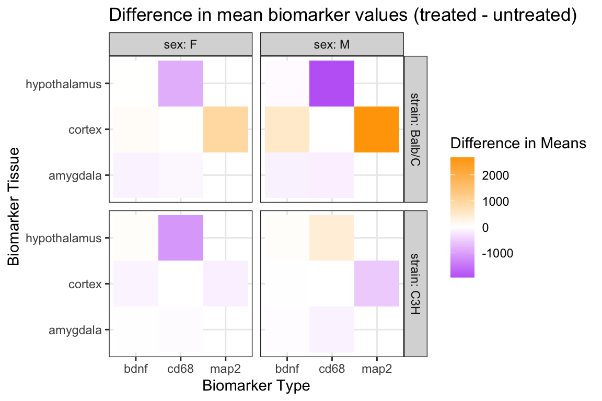
5.7 geom_tile() - with summarize()^2 (more advanced coding)
- Just showing a difference in means may not reflect the varying ranges and variability in the biomarkers.
- Let’s show the difference in means divided by the standard error:
\[\frac{mu_+ - mu_-}{\sqrt{sd^2_+/n_+ + sd^2_-/n_-}}\]
- Instead of using
pivot_wider, we can actually usesummarizea second time- (and we could have done this in the above example as well).
- (similar to before)
tmpdata_summarize = mouse_biomarker_long %>%
group_by(biomarker_type,
biomarker_location,
trt,
strain,
sex) %>%
summarize(m = mean(biomarker_value, na.rm = TRUE),
se = var(biomarker_value, na.rm = TRUE) /
length(biomarker_value))
tmpdata_summarize# A tibble: 56 × 7
# Groups: biomarker_type, biomarker_location, trt, strain [28]
biomarker_type biomarker_location trt strain sex m se
<chr> <chr> <chr> <chr> <chr> <dbl> <dbl>
1 bdnf amygdala + Balb/C F 588. 1768.
2 bdnf amygdala + Balb/C M 559. 3304.
3 bdnf amygdala + C3H F 490. 1440.
4 bdnf amygdala + C3H M 484. 1164.
5 bdnf amygdala - Balb/C F 719. 8177.
6 bdnf amygdala - Balb/C M 711. 464.
7 bdnf amygdala - C3H F 499. 2053.
8 bdnf amygdala - C3H M 507. 3493.
9 bdnf cortex + Balb/C F 1080. 6993.
10 bdnf cortex + Balb/C M 1582. 51650.
# ℹ 46 more rows- In the next bit of code we use a “base R” indexing of a vector.
- Here’s a simple example of this kind of indexing:
- The code below works because we know that there is just
- one value within each group when
trt= “+” and - one value within group when
trt= “-”.
- one value within each group when
- The value of
diffneeds to be a numeric value of length 1, i.e one number.
tmpdata_diff <- tmpdata_summarize %>%
group_by(biomarker_type,
biomarker_location,
strain,
sex) %>%
# take m value where trt is + and subtract m value where trt is - and then divide....
summarize(std_diff = (m[trt == "+"] - m[trt == "-"]) /
sqrt(se[trt == "+"] + se[trt == "-"])
)
tmpdata_diff# A tibble: 28 × 5
# Groups: biomarker_type, biomarker_location, strain [14]
biomarker_type biomarker_location strain sex std_diff
<chr> <chr> <chr> <chr> <dbl>
1 bdnf amygdala Balb/C F -1.31
2 bdnf amygdala Balb/C M -2.47
3 bdnf amygdala C3H F -0.144
4 bdnf amygdala C3H M -0.336
5 bdnf cortex Balb/C F 0.726
6 bdnf cortex Balb/C M 2.25
7 bdnf cortex C3H F -1.24
8 bdnf cortex C3H M -0.150
9 bdnf hypothalamus Balb/C F 0.203
10 bdnf hypothalamus Balb/C M -0.901
# ℹ 18 more rowsggplot(tmpdata_diff,
aes(x = biomarker_type,
y = biomarker_location,
fill = std_diff)) +
geom_tile() +
facet_grid(
rows = vars(strain),
cols = vars(sex),
labeller = labeller(
sex = label_both,
strain = label_both)
) +
scale_fill_gradient2(
low = "purple",
mid="white",
high="orange") +
labs(
x = "Biomarker Type",
y = "Biomarker Tissue",
fill = "Difference in mean/sd",
title = "Difference in mean/sd biomarker values (treated - untreated)") +
theme_bw()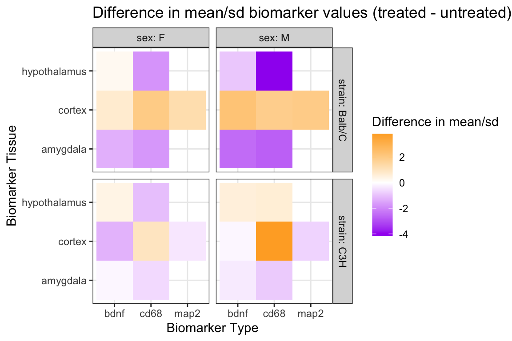
5.8 geom_smooth()
geom_smooth()adds a smoothing curve (or line) to a scatterplot.- The default method is
loess- but we can also show a linear association by using
method = "lm" - to show the least squares fit linear regression line to the data.
- but we can also show a linear association by using

- We can make a longer dataset based on mirna values similar to what we did with the biomarker data, to create one plot of both miRNAs:
# create long mirna data
mouse_mirna_long <- mouse_data %>%
pivot_longer(cols = starts_with("mir"),
names_to = "mirna",
values_to = "mirna_value")
glimpse(mouse_mirna_long)Rows: 192
Columns: 18
$ sid <dbl> 137, 137, 137, 137, 137, 137, 138, …
$ strain <chr> "C3H", "C3H", "C3H", "C3H", "C3H", …
$ trt <chr> "-", "-", "-", "-", "-", "-", "-", …
$ sex <chr> "M", "M", "M", "M", "M", "M", "M", …
$ time <chr> "tp1", "tp1", "tp2", "tp2", "tp3", …
$ normalized_bdnf_amygdala_pg_mg <dbl> 492.4831, 492.4831, 275.1623, 275.1…
$ normalized_bdnf_cortex_pg_mg <dbl> 720.0173, 720.0173, NA, NA, 871.828…
$ normalized_bdnf_hypothalamus_pg_mg <dbl> NA, NA, 1169.2845, 1169.2845, NA, N…
$ normalized_cd68_amygdala_pg_mg <dbl> 988.9628, 988.9628, 574.0655, 574.0…
$ normalized_cd68_cortex_pg_mg <dbl> 8.393707, 8.393707, NA, NA, NA, NA,…
$ normalized_cd68_hypothalamus_pg_mg <dbl> NA, NA, 6800.870, 6800.870, NA, NA,…
$ normalized_map2_cortex_pg_mg <dbl> 352.9653, 352.9653, NA, NA, 2693.93…
$ learning_outcome <dbl> 3.52, 3.52, 19.81, 19.81, 2.44, 2.4…
$ preference_obj1 <dbl> 41.72205, 41.72205, 37.51387, 37.51…
$ preference_obj2 <dbl> 58.27795, 58.27795, 62.48613, 62.48…
$ time_month <fct> 1 month, 1 month, 6 months, 6 month…
$ mirna <chr> "mirna1", "mirna2", "mirna1", "mirn…
$ mirna_value <dbl> 5.2630200, 1.6536200, -0.0491371, -…ggplot(mouse_mirna_long,
aes(x = mirna_value,
preference_obj2,
color = trt)) +
geom_point() +
geom_smooth(method = "lm") +
ggthemes::scale_color_tableau() +
facet_grid(vars(mirna),
vars(time_month),
scales = "free_x") +
theme_bw() +
labs(
x = "miRNA",
y ="Preference for object 2 (%)",
color = "Treatment")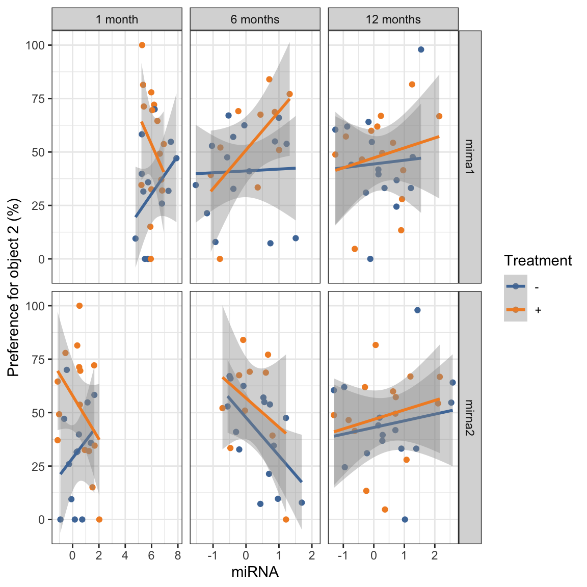
6 Next time
We will continue to practice with ggplot, but in the next “part” we will start focusing on lists and functions!
7 Post Class Survey
Please fill out the post-class survey.
Your responses are anonymous in that I separate your names from the survey answers before compiling/reading.
You may want to review previous years’ feedback here.
8 Acknowledgements
- Part 7 is based on the BSTA 505 Winter 2023 course, taught by Jessica Minnier.
- I made modifications to update the material from RMarkdown to Quarto, and streamlined/edited content for slides.
- Minnier’s Acknowledgements:
- Written by Jessica Minnier and inspired by work of Ted Laderas.